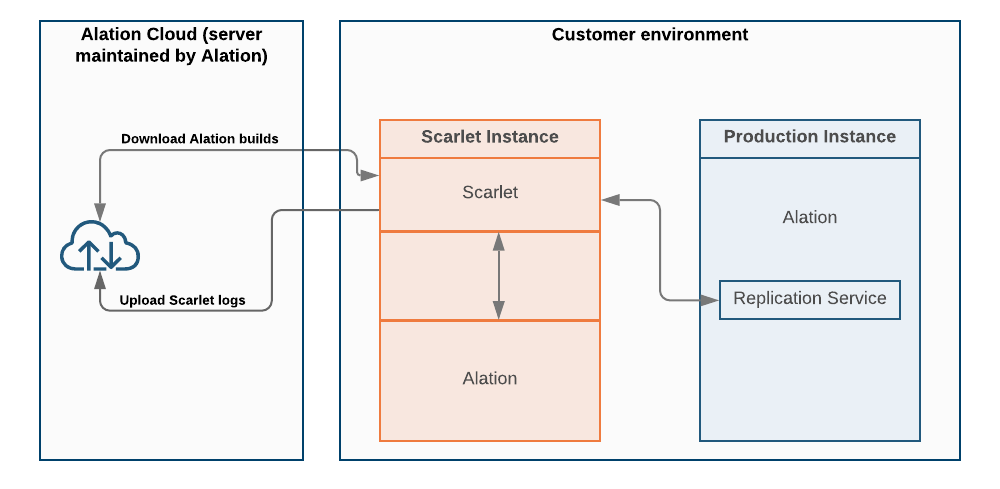
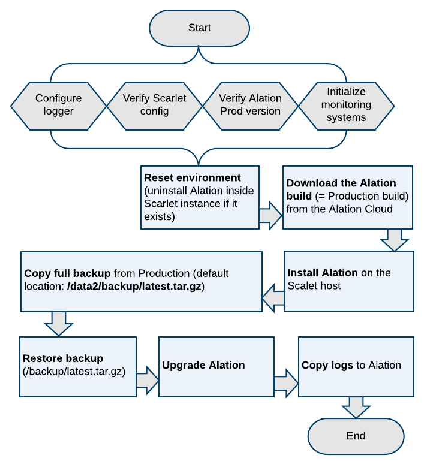
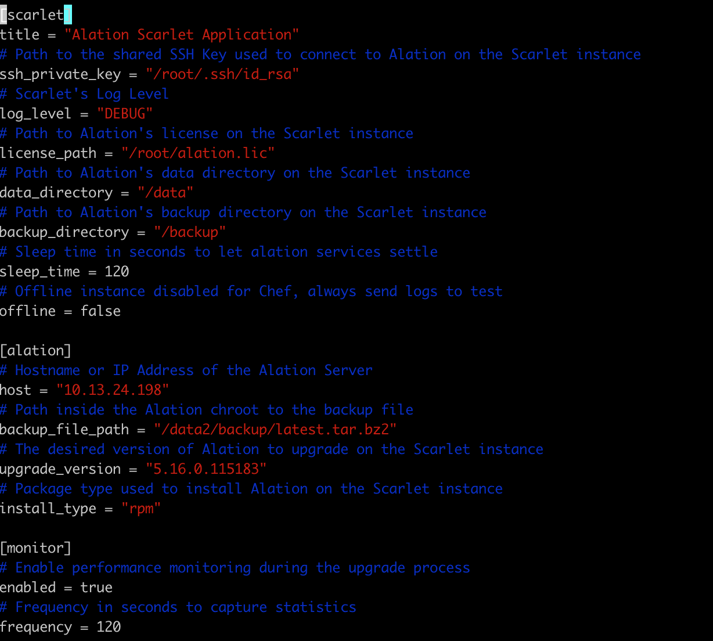
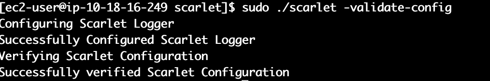

Scarlet Installation and Configuration¶
Important
The feature on this page is no longer offered, but you can reference the legacy documentation below. See Non-Production Environments in the Cloud for details about our current offering for Alation Cloud Service customers.
Important
This information is only relevant to Scarlet/Sandbox versions older than 2.0.0.120180.
Scarlet is complementary software developed by Alation to provide customers with a means to test upgrades to new or patch releases before changes are applied to the Production environment. Scarlet is a separate software package that is installed independently from the Production version of Alation.
Scarlet can be used to automatically create an Alation instance using a backup of the Production instance and to automatically upgrade it to a newer version. This enables Alation admins to uncover any update or post-update issues that could potentially affect Production.
Benefits of Using Scarlet¶
Scarlet allows for:
Testing at a scale analogous to Production to guarantee that issues related scale are exposed and can be resolved;
Reducing time and effort for the creation of a Test or Dev environment;
Early and timely feedback about functionality or fixes with an opportunity to iterate;
Co-development;
Automated collection of troubleshooting information.
Scarlet and Production¶
Scarlet only minimally affects Production. Alation users continue to work in their Production instance uninterrupted when Scarlet is running: there is no downtime or impact to Production. Scarlet only reads the version information and copies a Production backup file. It does not change or install anything on Production.
Scarlet:
is deployed in the Organization’s environment and network;
is managed and used by the Organization’s designated employees;
does not pass any catalog data to Alation;
does not use real users’ data or credentials.
Participation in the Scarlet Program as of 2020.3 Release Date¶
As of the 2020.3 release date, Scarlet is available as a collaborative program between Alation and customer organizations. Alation will supervise and guide the installation, configuration, and testing, and provide the necessary informational support.
For participants:
Alation provides a free Scarlet license and the package with the Scarlet binary file for download from the Alation cloud.
Customer organization allocates a machine and resources for the Scarlet instance.
An admin prepares an environment and installs Scarlet.
Alation provides a new build number for the upgrade.
The admin configures Scarlet specifying the build number, the path to the Production backup file, and other required parameters.
The admin performs a Scarlet run which creates the new Scarlet instance. Scarlet collects the resulting logs. Logs can be shared if permitted by the Organization’s security policies.
The admin signs in to the Scarlet instance and performs the required manual testing.
The information is communicated back to Alation.
The cycle can be repeated until a working solution has been found.
Scarlet Components and Runtime¶
As Scarlet runs, it automatically installs the same version of Alation as is used on Production, copies the backup from Production, restores it on the Scarlet instance, and updates the instance to the new version specified in its configuration file.
Please note that Scarlet uses a full Production backup. In 2020.3, Alation does not offer a means to select which specific data should be included into a backup.
Scarlet Component Diagram
{kind=link}
After the update is completed, Scarlet collects all the logs into a compressed file. If allowed in the configuration, it can automatically copy the log bundle to the Alation cloud.
Important
Scarlet does not perform any processing on Production and is a completely isolated instance. No user data is captured or logged in the Scarlet logs.
Scarlet Process Diagram
{kind=link}
License¶
Scarlet requires a valid Alation license. Please contact your account manager to be provided a license for Scarlet. The Scarlet license is free.
System Requirements¶
A Scarlet instance can be created on the same data storage platform or computer network where your Production Alation instance is created.
Alation recommends to install Scarlet on a separate machine where no Alation instance has been previously installed. It is not recommended to install Scarlet on a Dev/Test environment with an existing Dev/Test instance of Alation as this may result in corruption of the instance data.
Prepare a host for your Scarlet instance based on the same system specification as was used for Production.
Please see System Requirements for recommended specifications.
Network¶
The Scarlet host needs the following ports to be open:
Outbound 443 - External to your network, required for Scarlet to connect to the Alation Cloud and download Alation builds.
Inbound 49152 - 65535: Dynamic TCP Ports (Private Ports) to download Alation Builds.
Outbound 2022 - required for Scarlet to connect to the Replication Service on Production. Enables copying of the Production backup to the Scarlet instance.
Inbound 2022 on Production to communicate with Scarlet.
Datasource(s) - Depending on your test plan, the Scarlet instance may need connection to the data sources. The Scarlet host will need network access to the sources being tested. If this is the case, then make sure to add those networking rules to the Scarlet instance.
Note
To test port connectivity, you can use Netcat commands (requires installation if not pre-installed on the host):
nc -zv <ALATION_PROD_IP> 2022
nc -zv spectrum.alationdata.com 443
Install¶
Prepare the Environment¶
Create a server environment for your Scarlet instance using the system requirements of your production instance. Make sure the required ports have been opened.
Generate a SSH key pair on the Scarlet host. The SSH key is required for establishing connection to Production.
To generate a new key pair:
ssh-keygen -t rsa
By default, the generated key pair is saved in the root directory. Follow the prompts to specify a custom file name and directory, if necessary.
Please leave the passphrase empty: press Enter without providing any input in the passphrase prompt:
{kind=link}
Establish Connection Between Scarlet Host and Production¶
Scarlet needs access to Production. All actions required to establish the connection are safe and do not require a downtime.
On Production:
Enter the Alation shell:
sudo /etc/init.d/alation shell
Generate keys for the Replication Service:
alation_action cluster_generate_keysTo allow communication between the Scarlet instance and Production, run:
replication_helper
Follow the prompt Please Enter Remote Servers Public Key to enter the Public Key you have generated on the Scarlet host.
Follow the prompt Please Enter Remote Servers IP Address to enter the IP address of the Scarlet host:
From the Scarlet host, test access to Production:
ssh -p 2022 -i <path to private key> alationadmin@<Alation Server IP or Hostname>
If this command is successful, you will see output similar to the following example:
Last login: Sat Jun 27 01:56:20 2020 (env) PROD [alationadmin@exciting-stork ~]$
{kind=link}
To exit and go back to the Scarlet instance, do: $exit
Provide a Valid License¶
Copy the Alation license file to the Scarlet host:
scp -P 2022 -i <path to private key> alationadmin@<Production IP or Hostname>:<path to license> <path to license on Scarlet>
Take note of the full path to the license file on the Scarlet host. You will need it for the Scarlet configuration file.
Install the Scarlet Package¶
You will be provided a direct link to download the Scarlet installer package from an Alation-managed server. It will be either in the RPM or deb format depending on your environment.
Note
All commands must be run as root user or with sudo.
From the link provided by Alation, download the installer package and move or copy it to the Scarlet host that you have prepared.
Install Scarlet:
sudo dpkg -i alation-scarlet-<version>_all.deb
or
sudo rpm -Uvh alation-scarlet-<version>_all.rpm
This will install two files on the Scarlet host:
/opt/alation/scarlet/scarlet - the main executable
/etc/alation/scarlet/config.toml - the configuration file
Note
No 3rd party packages or libraries need to be installed for Scarlet to run.
After the installation, proceed to configure Scarlet.
Configure¶
Currently there is no way to define or restrict which data is included into an Alation backup. Scarlet uses the full Production backup. The process of copying the backup from Production is automatic and part of the Scarlet run. Copying becomes possible when port 2022 is opened on Production.
Prepare a Valid Backup¶
Scarlet version 2020.3 requires that a valid backup be present on Production for copying to the Scarlet instance. The default location for backups on the Alation server is at /data2/backup (inside the Alation shell). Please make sure that there exists a valid backup that can be copied by Scarlet. Alation recommends to use the latest backup. Please create one if it does not exist. See Create Backups Manually on how to create a backup.
Update the Scarlet Configuration File¶
On the Scarlet instance, open the configuration file /etc/alation/scarlet/config.toml and specify the appropriate values that apply to your environment. Save the changes:
Default Configuration File
{kind=link}
Parameters |
Value |
|---|---|
For the Scarlet host: under [scarlet] |
|
scarlet.title |
Name of the application |
scarlet.ssh_private_key |
The full path to the SSH Key on the Scarlet host used to connect to Production |
scarlet.log_level |
Log Level: INFO, WARN, or DEBUG |
scarlet.license_path |
The full path to the Alation license on the Scarlet host |
scarlet.data_directory |
The full path to the Alation /data directory on the Scarlet host |
scarlet.backup_directory |
The full path to the Alation /backup directory on the Scarlet host |
scarlet.sleep_time |
Time in seconds to allow Alation to settle between installation and upgrade actions. After Scarlet installs the Production version of Alation, there will be a pause for the time interval specified in this parameter to allow all processes to complete before Scarlet attempts the upgrade. Values: 0 to 1200 |
scarlet.offline |
To choose if the instance needs to run in offline or online mode. Values: true or false. The default is false.
|
For the Alation host: under [alation] |
|
alation.host |
IP address or hostname of your production instance. |
alation.backup_file_path |
The 2020.3 version of Scarlet expects that the backup file is present on Production and is accessible from inside the Alation shell. For this parameter specify the full path inside the Alation shell to the backup file on Production. The path should include the backup file name, for example: /data2/backup/202006270211_5-10-0-86707_alation_backup.tar.gz Scarlet will download this backup file from the location specified. |
alation.upgrade_version |
Alation version that Scarlet will perform the upgrade to. The upgrade version number will be provided by Alation. |
alation.install_type |
Type of installation for your system. Values: RPM or DEB |
monitor.enabled |
If set to true (default), this parameter enables performance monitoring on the Scarlet instance during execution. If set to false, then no metrics are collected during the Scarlet run. Values: true or false |
monitor.frequency |
The parameter sets how frequently in seconds to collect performance metrics. Every N seconds as set in this parameter, Alation will gather CPU, RAM, and process information and save the output to the files:
The files will be included into the Scarlet log bundle. See Logs. |
Verify¶
Verify that all the required values are configured before running the Scarlet binary: run the following command from /opt/alation/scarlet as is shown below:
sudo ./scarlet -validate-config
{kind=link}
In case of an error in any of the configurations in the config file, you will see an error in the console. Correct the configuration.
Run¶
To run Scarlet:
On the Scarlet host, run:
cd /opt/alation/scarlet/ sudo ./scarlet
Note
If you have a substantial amount of data, it is recommended to run Scarlet using the Linux command of nohup and as a background process (&):
sudo nohup ./scarlet &
The process will run in the background and you can review the Scarlet logs or the nohup logs for more information.
Scarlet installs the Production version of Alation on the Scarlet host, restores the data from the backup, and upgrades the Alation instance to the version specified in the configuration file (alation.upgrade_version parameter). The console output will display warnings and error messages if any occur during execution. The raw logs are in /var/log/alation/scarlet.
To tail the logs:
tail -f /var/log/alation/scarlet/scarlet.log
At the end of a successful run, the message “Scarlet Ran Successfully” is displayed.
Scarlet disables email notifications and all scheduled jobs and tasks, such as scheduled queries, scheduled MDE, QLI, and Profiling jobs, so they are not run on the Scarlet instance after the update. Login for Production users is also disabled as Scarlet creates a Scarlet user account for logging in and testing the features.
Important
During its execution, Scarlet generates an admin user account that must be used to log in to the Alation UI on the Scarlet instance. See Test.
Logs¶
After the Scarlet run (either successful or failing), all Scarlet logs and performance metrics are compressed and copied from /var/log/alation/scarlet to /data1/site_data/logs/scarlet-<timestamp>.tar.gz (inside the Alation shell). The content includes the Scarlet logs generated during the run time and all the Alation logs found in /data1/site_data/logs at the time Scarlet completes its execution.
Scarlet Data Collection¶
Scarlet collects data during its execution. This is a list of all pieces of data that Scarlet collects:
The output of the command rpm or dpkg during the Alation package installation and upgrade;
The output of the command destructive_restore_all during the backup restoration process;
The output of commands run inside the Alation Chroot to facilitate the installation, restore, and upgrade using automated methods;
The output of performance metrics calculated during Scarlet run time (if parameter monitor.enabled is set to true):
IO counters
Virtual memory
Disk Usage
CPU Usage
Sending Logs to Alation¶
If the Scarlet configuration parameter scarlet.offline is set to false, the compressed directory /data1/site_data/logs will be automatically sent to the Alation cloud for review. If not, you can choose to share it with Alation manually.
Test¶
After successfully updating Alation on the Scarlet instance, you can proceed to the testing stage.
The Scarlet instance needs to have the required ports open to establish connection to sources if your testing is focused on specific sources. For information about ports for specific sources, please see the respective sections in the Data Sources section: Adding Data Sources.
Important
In Scarlet 2020.3, the users whose accounts exist on Production cannot log in to the Alation UI on the Scarlet instance. Only one admin user, generated by Scarlet during its run can have access to the UI.
To test,
Print the credentials for the generated admin user account. Go to directory /opt/alation/scarlet and type:
sudo ./scarlet -get-local-user
You will receive an output with the username and password:
{kind=link}
2. Open your browser and type the IP of the Scarlet instance. If your Production instance uses SAML authentication, append the string /login/?nosaml=true to the URL: https://<ip>/login/?nosaml. This will bypass SAML authentication and will let you log in with the user credentials.
Example: 10.13.18.75/login/?nosaml=true
If Production uses LDAP or built-in authentication, there is no need to append any additional strings. You should see the login screen for Alation.
Communication¶
Please provide feedback to the Alation Engineering team. During the 2020.3 Scarlet program, the Scarlet Engineering team will be in communication with the participants and will support the installation process and the test cycle. They will lead communication and collect feedback about all the stages of Scarlet deployment and usage.
Scarlet Instance Lifecycle¶
The Scarlet instance can be shut down or completely destroyed when it is not in use. It can be brought up again when required by rerunning the Scarlet executable.